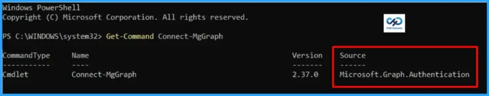
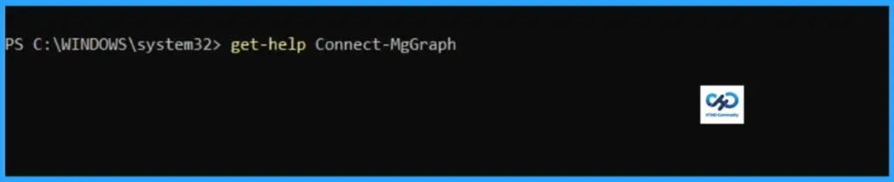
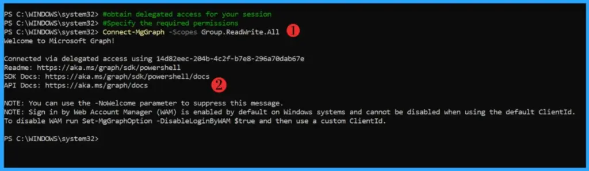
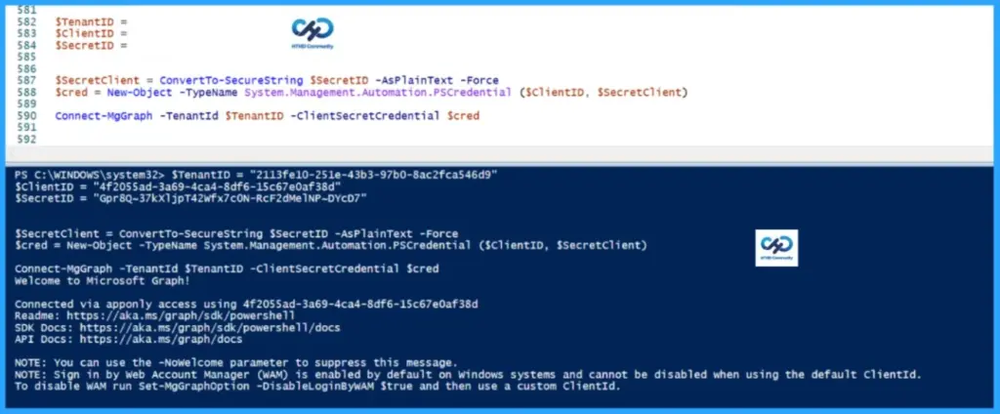

Key Takeaways
- Microsoft Graph is an API that provides a single endpoint for accessing data, intelligence, and insights from Microsoft 365.
- Microsoft Graph can be leveraged to create personalised experiences catering to individual users’ unique contexts, thereby increasing their productivity.
- It provides a single endpoint,
https://graph.microsoft.com, which enables access to various data
Using Connect-MgGraph Cmdlet to Automate Microsoft 365 via Microsoft Graph PowerShell! Hey there! If you’re working with Microsoft 365 solutions, I’ve got something that might make your life a whole lot easier. We all know the pressure to automate everything is real – but don’t worry, this article is here to help. Dive in, explore, and thank me later!
Table of Contents
Getting Started with Microsoft Graph PowerShell SDK
Microsoft Graph acts as the gateway to Microsoft’s cloud ecosystem, offering a unified endpoint, https://graph.microsoft.com– to connect with data, insights, and intelligence across Microsoft 365, Windows, and Enterprise Mobility + Security. Instead of juggling multiple APIs, developers can rely on this single entry point to streamline integration and build solutions that tap into the full breadth of Microsoft services.
For those who have experimented with Graph Explorer, you’ll know how convenient it is for testing queries directly in the browser. It’s lightweight, requires no installation, and is perfect for exploring what the API can do. But while Graph Explorer is great for quick checks, it isn’t designed for automation or large-scale scripting—this is where PowerShell comes into play.
To automate tasks, Microsoft provides the Graph PowerShell SDK through the PowerShell Gallery. This SDK includes two modules: Microsoft.Graph (aligned with the v1.0 REST API) and Microsoft.Graph.Beta (aligned with the beta REST API). Together, they empower administrators and developers to script, automate, and manage Microsoft 365 environments efficiently, making it easier to deliver scalable solutions and reduce manual effort.
Install Microsoft Graph PowerShell Modules
Installing the Microsoft Graph PowerShell module is essential for automation. I’ve already documented the recommended approach for setting up both the Microsoft.Graph and Microsoft.Graph.Beta modules. If you’re new to this topic, I encourage you to refer to that guide for a step‑by‑step walkthrough and best practices.
Read more : Best Guide to Install Microsoft Graph PowerShell ModulesTo install the Microsoft Graph PowerShell SDK, your PowerShell version should be at least 5.1 or later. However, Microsoft recommends having PowerShell 7 or later. As per Microsoft, no additional prerequisites are required to use the SDK with PowerShell 7 or later.
Deep Dive into Connect-MgGraph
You must have already installed the Microsoft Graph modules. It’s time to learn about the Connect-MgGraph. The Connect-MgGraph is part of Microsoft.Graph.Authentication module. You must invoke Connect-MgGraph before any commands that access Microsoft Graph. This cmdlet gets the access token using the Microsoft Authentication Library

Microsoft Graph PowerShell supports two types of authentication: delegated and app-only access. Several cmdlets are available to manage the various parameters required during authentication, such as the environment, application ID, and certificate.
| Authentication Type | Description | Typical Use Cases |
|---|---|---|
| Delegated Access | Runs under the context of a signed‑in user. Permissions are granted based on that user’s role and consent. Requires interactive sign‑in. | Ideal for scenarios where automation needs to act on behalf of a user, such as reading their emails, accessing calendar events, or managing files in OneDrive. |
| App‑Only Access | Runs without a signed‑in user. Permissions are granted directly to the application via Azure AD. Uses certificates or client secrets for authentication. | Best suited for background services, daemons, or scheduled scripts that need to manage resources across the tenant, such as provisioning users, managing groups, or applying policies. |
Learning Connect-MgGraph Through Get-Help
Let’s begin exploring Connect-MgGraph from the ground up. If you’re new to Microsoft Graph, a great starting point is to use the PowerShell Get-Help command with Connect-MgGraph.
This will provide detailed guidance on how the cmdlet works and the parameters it supports. The Get-Help cmdlet is a powerful way to learn about any PowerShell command, giving you the documentation you need directly within your console.

PS C:\WINDOWS\system32> get-help Connect-MgGraph
NAME
Connect-MgGraph
SYNOPSIS
Microsoft Graph PowerShell supports two types of authentication: delegated and app-only access. There are a number of cmdlets that can be used to manage the different parameters required during
authentication, for example, environment, application ID, and certificate.
SYNTAX
Connect-MgGraph [-AccessToken] <SecureString> [-ClientTimeout <Double>] [-Environment <String>] [-NoWelcome] [-ProgressAction <ActionPreference>] [<CommonParameters>]
Connect-MgGraph [-ClientId] <String> [[-CertificateSubjectName] <String>] [[-CertificateThumbprint] <String>] [-Certificate <X509Certificate2>] [-ClientTimeout <Double>] [-ContextScope {Process |
CurrentUser}] [-Environment <String>] [-NoWelcome] [-ProgressAction <ActionPreference>] [-SendCertificateChain <Boolean>] [-TenantId <String>] [<CommonParameters>]
Connect-MgGraph [[-ClientId] <String>] [[-Scopes] <String[]>] [-ClientTimeout <Double>] [-ContextScope {Process | CurrentUser}] [-Environment <String>] [-NoWelcome] [-ProgressAction <ActionPreference>]
[-TenantId <String>] [-UseDeviceCode] [<CommonParameters>]
Connect-MgGraph [[-ClientId] <String>] [[-Identity]] [-ClientTimeout <Double>] [-ContextScope {Process | CurrentUser}] [-Environment <String>] [-NoWelcome] [-ProgressAction <ActionPreference>]
[<CommonParameters>]
Connect-MgGraph [-ClientSecretCredential <PSCredential>] [-ClientTimeout <Double>] [-ContextScope {Process | CurrentUser}] [-Environment <String>] [-NoWelcome] [-ProgressAction <ActionPreference>]
[-TenantId <String>] [<CommonParameters>]
Connect-MgGraph [-ClientTimeout <Double>] [-ContextScope {Process | CurrentUser}] [-Environment <String>] [-EnvironmentVariable] [-NoWelcome] [-ProgressAction <ActionPreference>] [<CommonParameters>]
DESCRIPTION
You must invoke Connect-MgGraph before any commands that access Microsoft Graph. This cmdlet gets the access token using the Microsoft Authentication Library
RELATED LINKS
https://learn.microsoft.com/en-us/powershell/module/microsoft.graph.authentication/connect-mggraph https://learn.microsoft.com/en-us/powershell/module/microsoft.graph.authentication/connect-mggraph
REMARKS
To see the examples, type: "get-help Connect-MgGraph -examples".
For more information, type: "get-help Connect-MgGraph -detailed".
For technical information, type: "get-help Connect-MgGraph -full".
For online help, type: "get-help Connect-MgGraph -online"Understanding Connect-MgGraph Parameters
When getting started with Microsoft Graph PowerShell, running get-help Connect-MgGraph -Detailed is the quickest way to understand your authentication options. Executing this command in your console provides a comprehensive breakdown of the cmdlet, including its syntax, description, and related commands.
Get-Help Connect-MgGraph -DetailedMost importantly, it highlights the distinct parameter sets required for both delegated (user‑interactive) and app‑only (unattended service principal) authentication. The following table provides a detailed overview of each parameter available in Connect-MgGraph.
| Parameter | Type | Description |
|---|---|---|
| AccessToken | SecureString | Provides a bearer token for Microsoft Graph. Tokens expire, so you must handle refresh. |
| Certificate | X509Certificate2 | Supplies an X.509 certificate during invocation. |
| CertificateSubjectName | String | Uses the subject distinguished name to retrieve a certificate from the current user’s certificate store. |
| CertificateThumbprint | String | Uses the thumbprint to retrieve a certificate from the current user’s certificate store. |
| ClientId | String | Specifies the application’s client ID. |
| ClientSecretCredential | PSCredential | Provides the application ID and client secret for service principal authentication. |
| ClientTimeout | Double | Sets the HTTP client timeout (in seconds). |
| ContextScope | ContextScope | Defines the scope of the authentication context: Process (current process) or CurrentUser (all sessions for the user). |
| Environment | String | Specifies the national cloud environment (default: Global cloud). |
| EnvironmentVariable | SwitchParameter | Enables authentication using environment variables configured on the host machine. |
| Identity | SwitchParameter | Authenticates using a Managed Identity. |
| NoWelcome | SwitchParameter | Suppresses the welcome message. |
| ProgressAction | ActionPreference | Controls how progress is displayed during execution. |
| Scopes | String [ ] | Defines an array of delegated permissions to consent to. |
| SendCertificateChain | Boolean | Includes the x5c header in client claims for subject name/issuer‑based authentication. |
| TenantId | String | Specifies the tenant ID or sign‑in audience (e.g., common, organizations, consumers). |
| UseDeviceCode | SwitchParameter | Uses device code authentication instead of browser control. |
| CommonParameters | Various | Supports standard PowerShell parameters like Verbose, Debug, ErrorAction, etc. |
Examples
By appending the -Examples switch, you can also instantly access pre-built code snippets that demonstrate how to pass scopes, target specific tenants, or connect securely using certificates.. I will explain a few important authentication methods with examples in this article. However, you can find more when you run the command below if you wish to explore further.
Get-Help Connect-MgGraph -ExamplesDelegated Access – Interactive Authentication
The Connect-MgGraph cmdlet includes the -Scopes parameter, which you can use during interactive authentication. By specifying the required permissions, you obtain delegated access for your session. In this example, I am authenticating with the Group.ReadWrite.All scope.

App-only Access: Using Client Credentials with Client Secret
In the PowerShell snippet above, we are connecting to Microsoft Graph using app-only authentication with a client secret. Instead of prompting a user to sign in interactively, the script leverages the application’s own identity by supplying the Tenant ID, Client ID, and Client Secret.
$TenantID = "Enter Tenant ID"
$ClientID = "Enter Client ID"
$SecretID = "Enter Secret ID"
$SecretClient = ConvertTo-SecureString $SecretID -AsPlainText -Force
$cred = New-Object -TypeName System.Management.Automation.PSCredential ($ClientID, $SecretClient)
Connect-MgGraph -TenantId $TenantID -ClientSecretCredential $credThe secret is converted into a secure string, wrapped in a PSCredential object, and then passed to Connect-MgGraph via the -ClientSecretCredential parameter. This method grants the application permissions that have been consented to in Azure AD, allowing it to act independently of any user session. In practice, this means the app itself is authorised to perform operations in Microsoft Graph without requiring delegated access from a signed-in user.

App-only Access: Using Client Credentials with Client Certificate
In this example, we are connecting to Microsoft Graph using a certificate credential instead of a client secret. The code retrieves the certificate from the local machine’s certificate store (Cert:\LocalMachine\My) by referencing its thumbprint, and stores it in the $Cert variable. That certificate is then passed to Connect-MgGraph along with the Client ID and Tenant ID. This method is still app-only authentication (application permissions), but it uses a certificate for validation rather than a secret string. When using the certificate method, there are a few important points to note:
- The app will act independently of any user session, so only application permissions apply.
- The certificate must be installed in the local machine or the current user certificate store.
- The thumbprint must match exactly, otherwise the connection will fail.
- The certificate must be registered in Azure AD for the application (uploaded under the app registration’s “Certificates & secrets” section).
- Certificates are generally considered more secure than client secrets, since they can be rotated and managed with stronger policies.
# Define variables
$TenantId = "YOUR_TENANT_ID"
$ClientId = "YOUR_APP_ID"
$Thumbprint = "YOUR_CERT_THUMBPRINT"
# Retrieve the certificate from the LocalMachine store
$Cert = Get-ChildItem -Path Cert:\LocalMachine\My\$Thumbprint
# Connect to Microsoft Graph using certificate-based authentication
Connect-MgGraph -ClientId $ClientId -TenantId $TenantId -Certificate $Cert
Need Further Assistance or Have Technical Questions?
Join the LinkedIn Page and Telegram group to get the latest step-by-step guides and news updates. Join our Meetup Page to participate in User group meetings. Also, Join the WhatsApp Community to get the latest news on Microsoft Technologies. We are there on Reddit as well.Author
About the Author: Sujin Nelladath, a Microsoft Graph MVP with over 13 years of experience in Intune device management and Automation solutions, writes and shares his experiences with Microsoft device management technologies, Azure, DevOps, Graph API and PowerShell automation.